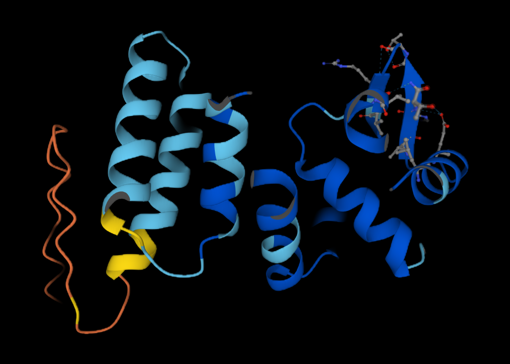

01 / semester project · spring 2026
Adapting Protein Language Models for Generative C05 CDR-H3 Design
Adapting ESM2 with antibody-domain pretraining and preference optimization to propose novel C05 antibody variants for downstream screening and experimental validation.
download report ↗
Overview
This semester project investigates whether a pretrained protein language model can become a useful proposal model for C05 antibody design. The focus is the 24-amino-acid CDR-H3 loop, which drives the antibody's interaction with the influenza hemagglutinin receptor-binding site.
Starting from ESM2, I first performed domain-adaptive pretraining on human heavy-chain sequences from the Observed Antibody Space. I then applied Direct Preference Optimization (DPO) to deep-mutational-scanning measurements, teaching the model to prefer C05 variants with stronger binding enrichment. Full-parameter and LoRA-based adaptation were compared, followed by candidate generation with Gibbs sampling and stochastic beam search.
DPO substantially improved agreement with held-out binding-enrichment data. Its stochastic-beam generator also proposed many unique, training-novel variants whose top candidates received stronger scores from two independent in-silico evaluators than random and position-specific baselines. These are computational results: candidate sequences still require independent filtering and experimental validation.
antibody designprotein language modelsDPOLoRA